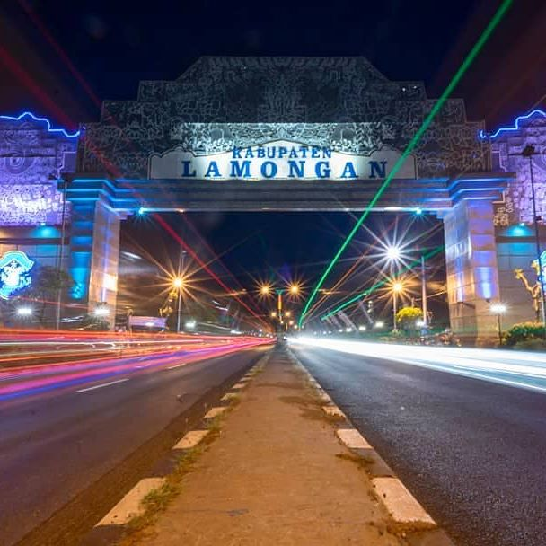
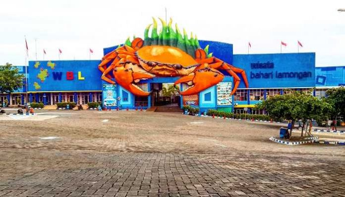
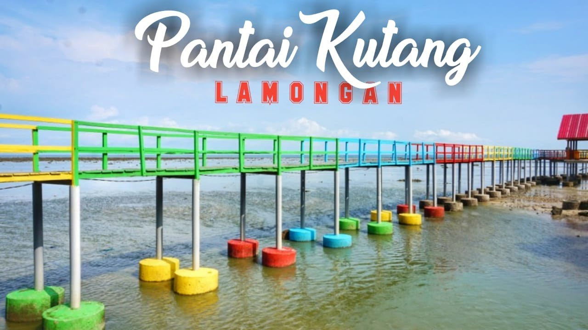
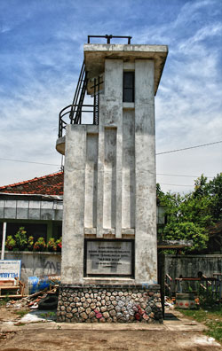

Kota Lamongan

Kabupaten yang terkenal dengan soto dan wingkonya ini, berbatasan dengan Laut Jawa di utara, Kabupaten Gresik di timur, Kabupaten Mojokerto dan Kabupaten Jombang di selatan, serta Kabupaten Bojonegoro dan Kabupaten Tuban di barat.
Secara geografis, Lamongan merupakan salah satu kabupaten yang terletak di pantai utara Jawa Timur dan sebagian kawasan pesisirnya berupa perbukitan.
Dilihat dari sisi sejarah dan geografis, Lamongan tak kalah dengan kabupaten lain di Jawa Timur, dimana memiliki potensi wisata yang menarik untuk dikunjungi. Di daerah pantai terdapat obyek wisata Monumen Van der Wijck, Waduk Gondang, Wisata Bahari Lamongan dan Gua Maharani yang merupakan gua kapur yang sangat indah. Dari pariwisata religi, terdapat beberap tempat ziarah yang sering dikunjungi yaitu, makam Sunan Drajat dan makam Sunan Sendang Duwur.
Dari semua hal tersebut di atas, yang paling dikenal dari Lamongan adalah makanannya. Lamongan memiliki beberapa makanan khas, seperti, soto, nasi baronan, tahu tek, tahu campur, wingko Babat yang asli dari daerah Babat dan banyak di akui oleh daerah lain, juga siwalan.
Wisata Bahari Lamongan

Wisata Bahari Lamongan atau disingkat WBL adalah tempat wisata bahari yang terletak di Kecamatan Paciran, Kabupaten Lamongan, Jawa Timur. Tempat wisata ini dibuka sejak 14 November 2004. Wisata Bahari Lamongan dikelola oleh PT Bumi Lamongan Sejati, sebuah perusahaan patungan Pemkab Lamongan dengan PT Bunga Wangsa Sejati.
Wisata Bahari Lamongan dibangun di lokasi yang dahulu dikenal dengan nama Pantai Tanjung Kodok. Objek wisata ini berada di jalur pantai utara Surabaya-Tuban, serta berada di dekat sejumlah objek wisata andalan di Jawa Timur, di antaranya Gua Maharani, Makam dan Museum Sunan Drajat, Makam Sunan Sendang Duwur, dan Tanjung Kodok Resort.
Tidak jauh dari WBL, sekitar 5 kilometer ke arah timur, sudah dioperasikan kawasan berikat yang dikenal dengan Lamongan Shorebase (LS). Sekitar 6 kilometer arah barat terdapat Pelabuhan Perikanan Nusantara di Kecamatan Brondong dengan tempat pelelangan ikan yang sangat dikenal di Jawa Timur.
Beberapa wahana unggulan tempat wisata ini antara lain Istana Bawah Laut, Gua Insectarium, Space Shuttle, Anjungan Wali Songo, Texas City, Paus Dangdut, Tembak Ikan, Rumah Kaca, serta Istana Bajak Laut.
Pantai Kutang

Pantai Kutang ini merupakan salah satu tempat wisata yang banyak disukai oleh pengunjung pada umumnya. Karena pantai ini menghadirkan panorama alam yang indah. Pantai ini dikelilingi oleh mangrove yang menambah pemandangan tempat ini lebih menarik. Disana Anda bisa bermain pasir, air ataupun memancing.
Banyak pengunjung yang menyukai tempat ini karena sangat nyaman untuk berlibur. Pantai ini memiliki pasir putih yang luas sehingga Anda bisa puas melakukan permainan. Anda bisa berpiknik bersama keluarga dengan membawa beberapa makanan dan berduduk mengobrol bersama keluarga Anda.
Monumen Van Der Wijck

Monumen Van Der Wijck, adalah sebuah monumen yang dibangun pada masa pemerintahan Hindia-Belanda, yang terletak di kantor pelabuhan Brondong, Lamongan.
Monumen di bangun untuk memperingati tenggelamnya kapal Van Der Wijck. Kapal Van der Wijk adalah kapal uap milik Koninklijke Paketvaart Maatschappij (KPM) yang merupakan cikal bakal Pelayaran Nasional Indonesia (PELNI) saat ini.
Rute kapal pada waktu itu memang melayani kawasan Hindia Belanda saat itu. Kapal Van der Wijk dibuat oleh Maatschappij Fijenoord, Rotterdam tahun 1921 dengan berat tonase 2.596 ton, lebar kapal 13,5 meter. Kapal ini mendapat nama panggilan "de meeuw" atau "The Seagull", ini karena figur kapal ini sangat anggun dan tenang.
Saat pelayarannya yang terakhir, kapal Van der Wijk berangkat dari Bali ke Semarang dengan singgah terlebih dahulu di Surabaya. Kapal tenggelam di perairan Lamongan, tepatnya 12 mil dari pantai Grondong. Kapal ini tenggelam pada hari selasa, 20 Oktober 1936. Jumlah penumpang saat itu adalah 187 warga Pribumi dan 39 warga Eropa. Jumlah awak kapalnya terdiri dari seorang kapten, 11 perwira, seorang telegrafis, seorang steward, 5 pembantu kapal dan 80 ABK dari pribumi.Dan korban dari tenggelamnya kapal ini ada 4 meninggal dan 49 hilang.